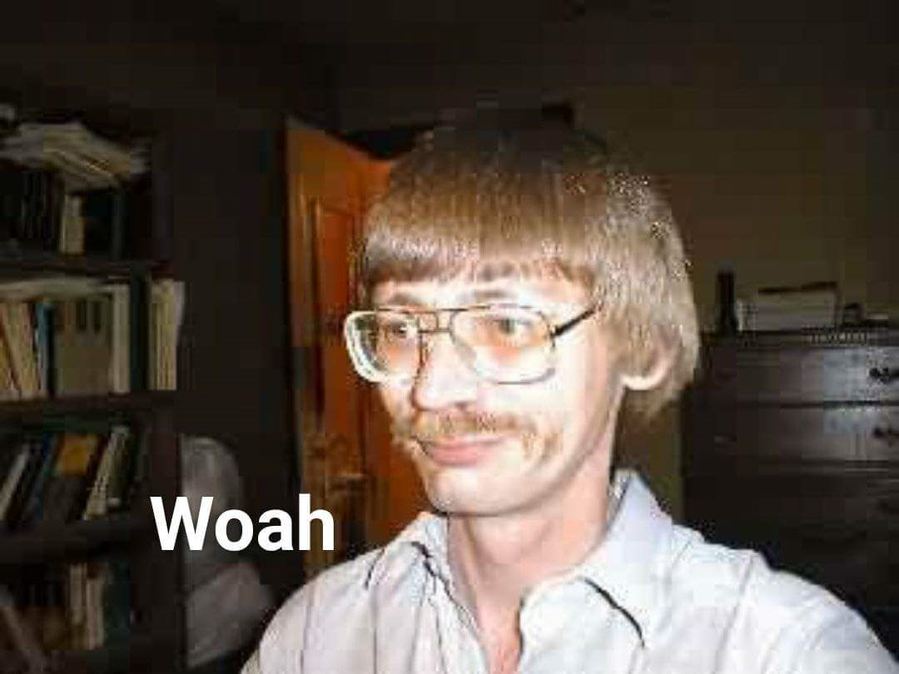

- Felix N. Llambias
- ITAR KEA
- KOM/IT, IT biks, Game Design
- STR = 9
- DEX = 9
- CON = 12
- INT = 14
- WIS = 12
- CHA = 16
- Navn –
- Studie/erhverv –
- Baggrund –
- Færdigheder –
- Interesser –
- Hvad I kan bidrage med til projektet –
- Mål for fremtiden –
- Sjov fakta –
- Kontaktoplysninger (valgfrit) –
Mike, 29
- ITA-KEA
- Nørdet feller med kreative interesser
- Mål for fremtiden? – Live life care free
This is Lineas box
- Linea
- IT-arkitektur på Kea
- STX, rideskoleunderviser, kæphesteindstruktør under Dansk Rideforbund
- Superbruger på google-maps
- Kreative projekter med maling, stof, garn og smykker
- Jeg bidrager med godt overblik,
- Mål for fremtiden: stort vindue og frugt i køkkenet
- Aldrig gå ned på vand, klistermærker og snacks
- Jeg har muligvis det bedste username
- Find mig på instagram: linea_moltved
Frø

Hmmm

En Lille liste med Smileys
-
(•‿•)
-
(≖ ͜ʖ≖)
-
( ͡⚆ ͜ʖ ͡⚆)
-
(▀̿Ĺ̯▀̿ ̿)